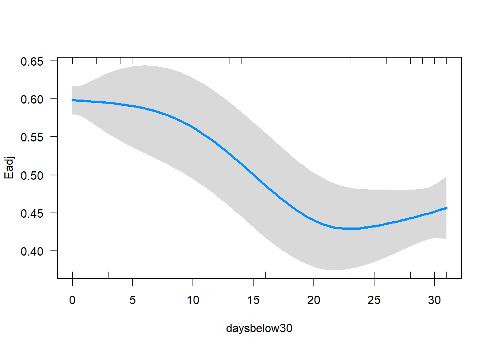
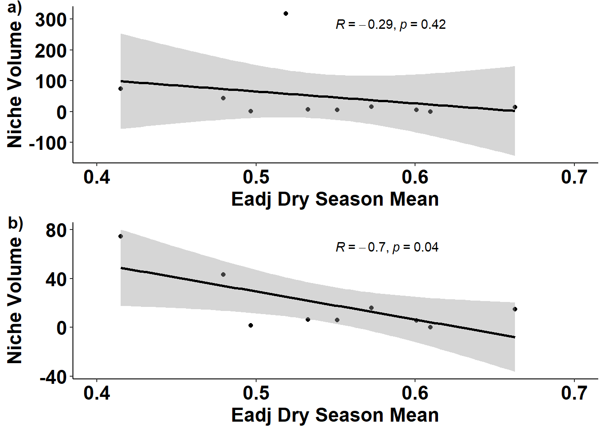

library(tidyverse)
## Warning: package 'ggplot2' was built under R version 4.3.2
## ── Attaching core tidyverse packages ──────────────────────── tidyverse 2.0.0 ──
## ✔ dplyr 1.1.2 ✔ readr 2.1.4
## ✔ forcats 1.0.0 ✔ stringr 1.5.0
## ✔ ggplot2 3.4.4 ✔ tibble 3.2.1
## ✔ lubridate 1.9.2 ✔ tidyr 1.3.0
## ✔ purrr 1.0.2
## ── Conflicts ────────────────────────────────────────── tidyverse_conflicts() ──
## ✖ dplyr::filter() masks stats::filter()
## ✖ dplyr::lag() masks stats::lag()
## ℹ Use the conflicted package (<http://conflicted.r-lib.org/>) to force all conflicts to become errors
library(ggpubr)
#Models libraries
library(mgcv)
## Loading required package: nlme
##
## Attaching package: 'nlme'
##
## The following object is masked from 'package:dplyr':
##
## collapse
##
## This is mgcv 1.8-42. For overview type 'help("mgcv-package")'.
library(glmmTMB)
#Model check libraries
library(visreg)
library(DHARMa)
## This is DHARMa 0.4.6. For overview type '?DHARMa'. For recent changes, type news(package = 'DHARMa')
library(performance)
## Warning: package 'performance' was built under R version 4.3.2
library(lsmeans)
## Loading required package: emmeans
## The 'lsmeans' package is now basically a front end for 'emmeans'.
## Users are encouraged to switch the rest of the way.
## See help('transition') for more information, including how to
## convert old 'lsmeans' objects and scripts to work with 'emmeans'.
library(emmeans)
library(MuMIn)
## Warning: package 'MuMIn' was built under R version 4.3.2
library(ggeffects)
## Warning: package 'ggeffects' was built under R version 4.3.2Synchrony Paper: Results
Content:
This document includes the analyses for
- Q1: How the inter-individual variability in space use varies across seasons and changed over the years?
- Eadj ~ s(Seasons) + s(Year)
- Q2: How the inter-individual variability in space use respond to hydrological parameters
- Eadj ~ s(water stage) + s(days below 30 cm)
- Q3: Does the inter-individual variability in space use translate into trophic niche changes?
R script: github
Packages
Packages with functions used for data processing and analyses.
Data processing
Data with Eadj metric, date, hydrology based seasons and year, and hydrological metrics. Metrics are based on monthly observations and divided by water year (May-April).
For script used to estimate Eadj values please go to: R script: Eadj
For script used to estimate trophic niche size got to: R script: MixingModels
R script: Hypervolume
#all data
sim = read_csv("./data/spat_sim_allthegoods_01_15_2023.csv")
## Rows: 132 Columns: 15
## ── Column specification ────────────────────────────────────────────────────────
## Delimiter: ","
## chr (5): Year.Month, fYear.Month, Month, fMonth, Season
## dbl (10): Eadj, Year, wYear, wMonth, fYear, hv_size, hv_n, monthly_mean_stag...
##
## ℹ Use `spec()` to retrieve the full column specification for this data.
## ℹ Specify the column types or set `show_col_types = FALSE` to quiet this message.
glimpse(sim)
## Rows: 132
## Columns: 15
## $ Year.Month <chr> "2012/05", "2012/06", "2012/07", "2012/08",…
## $ Eadj <dbl> 0.3612661, 0.5311459, 0.4810287, 0.4277326,…
## $ fYear.Month <chr> "12-May", "12-Jun", "12-Jul", "12-Aug", "12…
## $ Year <dbl> 2012, 2012, 2012, 2012, 2012, 2012, 2012, 2…
## $ wYear <dbl> 2012, 2012, 2012, 2012, 2012, 2012, 2012, 2…
## $ wMonth <dbl> 1, 2, 3, 4, 5, 6, 7, 8, 9, 10, 11, 12, 1, 2…
## $ Month <chr> "5", "6", "7", "8", "9", "10", "11", "12", …
## $ fYear <dbl> 2012, 2012, 2012, 2012, 2012, 2012, 2012, 2…
## $ fMonth <chr> "May", "Jun", "Jul", "Aug", "Sep", "Oct", "…
## $ Season <chr> "Wet", "Wet", "Wet", "Wet", "Wet", "Wet", "…
## $ hv_size <dbl> 6.433142, 6.433142, 6.433142, 6.433142, 6.4…
## $ hv_n <dbl> 7, 7, 7, 7, 7, 7, 7, 7, 7, 7, 7, 7, 11, 11,…
## $ monthly_mean_stage_cm <dbl> 26.478271, 40.954960, 50.960594, 50.557471,…
## $ monthly_mean_stage_cm_prev <dbl> NA, 26.478271, 40.954960, 50.960594, 50.557…
## $ daysbelow30 <dbl> 23, 0, 0, 0, 0, 0, 0, 0, 0, 3, 31, 30, 21, …
#sample size info
nsize = read_csv("./data/snook_sample_size_eadj.csv") |>
dplyr::rename(Year.Month = fYear.Month, eadj_n = n)
## Rows: 138 Columns: 2
## ── Column specification ────────────────────────────────────────────────────────
## Delimiter: ","
## chr (1): fYear.Month
## dbl (1): n
##
## ℹ Use `spec()` to retrieve the full column specification for this data.
## ℹ Specify the column types or set `show_col_types = FALSE` to quiet this message.
glimpse(nsize)
## Rows: 138
## Columns: 2
## $ Year.Month <chr> "2012/02", "2012/03", "2012/04", "2012/05", "2012/06", "201…
## $ eadj_n <dbl> 8, 14, 18, 19, 19, 16, 21, 12, 15, 15, 15, 16, 16, 18, 21, …
sim_all <- left_join(sim, nsize, by = "Year.Month")
glimpse(sim_all)
## Rows: 132
## Columns: 16
## $ Year.Month <chr> "2012/05", "2012/06", "2012/07", "2012/08",…
## $ Eadj <dbl> 0.3612661, 0.5311459, 0.4810287, 0.4277326,…
## $ fYear.Month <chr> "12-May", "12-Jun", "12-Jul", "12-Aug", "12…
## $ Year <dbl> 2012, 2012, 2012, 2012, 2012, 2012, 2012, 2…
## $ wYear <dbl> 2012, 2012, 2012, 2012, 2012, 2012, 2012, 2…
## $ wMonth <dbl> 1, 2, 3, 4, 5, 6, 7, 8, 9, 10, 11, 12, 1, 2…
## $ Month <chr> "5", "6", "7", "8", "9", "10", "11", "12", …
## $ fYear <dbl> 2012, 2012, 2012, 2012, 2012, 2012, 2012, 2…
## $ fMonth <chr> "May", "Jun", "Jul", "Aug", "Sep", "Oct", "…
## $ Season <chr> "Wet", "Wet", "Wet", "Wet", "Wet", "Wet", "…
## $ hv_size <dbl> 6.433142, 6.433142, 6.433142, 6.433142, 6.4…
## $ hv_n <dbl> 7, 7, 7, 7, 7, 7, 7, 7, 7, 7, 7, 7, 11, 11,…
## $ monthly_mean_stage_cm <dbl> 26.478271, 40.954960, 50.960594, 50.557471,…
## $ monthly_mean_stage_cm_prev <dbl> NA, 26.478271, 40.954960, 50.960594, 50.557…
## $ daysbelow30 <dbl> 23, 0, 0, 0, 0, 0, 0, 0, 0, 3, 31, 30, 21, …
## $ eadj_n <dbl> 19, 19, 16, 21, 12, 15, 15, 15, 16, 16, 18,…Q1 analyses, results and plots
Q1: How the inter-individual variability in space use varies across seasons and changed over the years?
We used GAMs to understand and characterize the seasonal cycle in inter-individual variability in space use and the overall trend across the years
Model Selection:
#Both smoothers for water months and year
q1.m1 <- gam(Eadj ~ s(wMonth, bs = "cc", k = 10) + s(wYear),
data = sim_all,
family = betar(link = "logit"),
method = "REML")
#Smoother only for water months
q1.m2 <- gam(Eadj ~ s(wMonth, bs = "cc", k = 10) + wYear,
data = sim_all,
family = betar(link = "logit"),
method = "REML")
#GLM (no smoothers)
q1.m3 <- glmmTMB(Eadj ~ wMonth + wYear,
data = sim_all,
family = beta_family(link = "logit"))
#Compare performance between models
compare_performance(q1.m1, q1.m2, q1.m3)
## Random effect variances not available. Returned R2 does not account for random effects.
## # Comparison of Model Performance Indices
##
## Name | Model | AIC (weights) | AICc (weights) | BIC (weights) | RMSE | Sigma | R2 | R2 (cond.) | R2 (marg.)
## ---------------------------------------------------------------------------------------------------------------------
## q1.m1 | gam | -261.0 (0.991) | -257.2 (0.962) | -219.6 (0.003) | 0.081 | 1.000 | 0.456 | |
## q1.m2 | gam | -251.7 (0.009) | -250.8 (0.038) | -231.3 (0.997) | 0.089 | 1.000 | 0.372 | |
## q1.m3 | glmmTMB | -208.3 (<.001) | -208.0 (<.001) | -196.8 (<.001) | 0.108 | 20.436 | | | 0.024Based on AICc the model with both smoothers (q1.m1) was selected as the best model structure
Model (q1.m1) summary
Summary of the coefficients estimates and goodness of fit
summary(q1.m1)
##
## Family: Beta regression(32.843)
## Link function: logit
##
## Formula:
## Eadj ~ s(wMonth, bs = "cc", k = 10) + s(wYear)
##
## Parametric coefficients:
## Estimate Std. Error z value Pr(>|z|)
## (Intercept) 0.23217 0.03043 7.629 2.36e-14 ***
## ---
## Signif. codes: 0 '***' 0.001 '**' 0.01 '*' 0.05 '.' 0.1 ' ' 1
##
## Approximate significance of smooth terms:
## edf Ref.df Chi.sq p-value
## s(wMonth) 3.808 8.000 64.17 <2e-16 ***
## s(wYear) 6.356 7.522 42.13 <2e-16 ***
## ---
## Signif. codes: 0 '***' 0.001 '**' 0.01 '*' 0.05 '.' 0.1 ' ' 1
##
## R-sq.(adj) = 0.456 Deviance explained = 50.1%
## -REML = -122.6 Scale est. = 1 n = 132Plots of fitted model
#Model output - seasonal trend
q1.m1.vis = visreg(q1.m1, type = "conditional", scale = "response")
#extracting fitted model from visreg to allow plotting in ggplot
q1.m1.month<-q1.m1.vis[[1]]$fit
seasonal_trend<-ggplot(q1.m1.month, aes(wMonth, visregFit))+
geom_ribbon(aes(ymin = visregLwr, ymax = visregUpr), color = "grey60", alpha = .2)+
geom_line(linewidth = 2, colour= "black") + theme_bw()+
geom_line(linetype = 2, colour = "black", aes(y = visregLwr))+
geom_line(linetype = 2, colour = "black", aes(y = visregUpr)) +
labs(x = "Water Year Month (May-April)", y = "Eadj", title = "Seasonal trend")+
scale_x_continuous(breaks = c(2, 4, 6, 8, 10, 12)) +
ylim(0.3,0.8) +
theme(axis.text = element_text(size = 14, face = "bold", colour = "black"),
axis.title = element_text(size = 15, face = "bold", colour = "black"),
plot.title = element_text(size = 16, face = "bold", colour = "black", hjust = 0.5),
panel.grid.major = element_blank(),
axis.line = element_line(colour = "black"),
panel.grid.minor = element_blank(),
panel.border = element_blank(),
panel.background = element_blank())
#Model ouptut - Yearly variability
q1.m1.year<-q1.m1.vis[[2]]$fit
yearly_vars<-ggplot(q1.m1.year, aes(wYear, visregFit))+
geom_ribbon(aes(ymin = visregLwr, ymax = visregUpr), color = "grey60", alpha = .2)+
geom_line(size = 2, colour= "black") + theme_bw()+
geom_line(linetype = 2, colour = "black", aes(y = visregLwr))+
geom_line(linetype = 2, colour = "black", aes(y = visregUpr)) +
labs(x = "Water Year (May-April)", y = "Eadj", title = "Inter-annual trend")+
scale_x_continuous(breaks = c(2012, 2014, 2016, 2018, 2020, 2022)) +
ylim(0.3,0.8)+
theme(axis.text = element_text(size = 14, face = "bold", colour = "black"),
axis.title = element_text(size = 15, face = "bold", colour = "black"),
plot.title = element_text(size = 16, face = "bold", colour = "black", hjust = 0.5),
panel.grid.major = element_blank(),
axis.line = element_line(colour = "black"),
panel.grid.minor = element_blank(),
panel.border = element_blank(),
panel.background = element_blank())
## Warning: Using `size` aesthetic for lines was deprecated in ggplot2 3.4.0.
## ℹ Please use `linewidth` instead.
#Plot of fitted model q1.m1
ggarrange(seasonal_trend, yearly_vars,
labels = c('a)','b)'),
ncol = 1, vjust = 1, align = "v")Q2 analyses, results and plots
Q2: How the inter-individual variability in space use respond to hydrological parameters
We used GLMs to understand and characterize the response in inter-individual variability in space use to hydrological conditions
Model Selection: Due to collinearity only single variable models were performed
#Renaming variables for model
sim_all = sim_all |>
rename(mean_stage = monthly_mean_stage_cm,
mean_Lstage = monthly_mean_stage_cm_prev)
#GLM and GAM using mean_stage
q2.glm.stage = glmmTMB(Eadj ~ mean_stage,
data = sim_all,
family = beta_family(link = "logit"))
q2.gam.stage = gam(Eadj ~ s(mean_stage),
data = sim_all,
family = betar(link = "logit"),
method = "REML")
#GLM and GAM using days below 30 cm
q2.glm.days = glmmTMB(Eadj ~ daysbelow30,
data = sim_all,
family = beta_family(link = "logit"))
q2.gam.days = gam(Eadj ~ s(daysbelow30),
data = sim_all,
family = betar(link = "logit"),
method = "REML")
#GLM and GAM using lag of mean stage
q2.gam.Lstage = gam(Eadj ~ s(mean_Lstage),
data = sim_all,
family = betar(link = "logit"),
method = "REML")
q2.glm.Lstage = glmmTMB(Eadj ~ mean_Lstage,
data = sim_all,
family = beta_family(link = "logit"))
#Best = gam
compare_performance(q2.glm.stage, q2.gam.stage)
## Random effect variances not available. Returned R2 does not account for random effects.
## # Comparison of Model Performance Indices
##
## Name | Model | AIC (weights) | AICc (weights) | BIC (weights) | RMSE | Sigma | R2 (cond.) | R2 (marg.) | R2
## ----------------------------------------------------------------------------------------------------------------------------
## q2.glm.stage | glmmTMB | -225.6 (<.001) | -225.4 (<.001) | -217.0 (0.074) | 0.102 | 22.963 | | 0.045 |
## q2.gam.stage | gam | -245.1 (>.999) | -243.9 (>.999) | -222.0 (0.926) | 0.091 | 1.000 | | | 0.350
compare_performance(q2.glm.Lstage, q2.gam.Lstage)
## Random effect variances not available. Returned R2 does not account for random effects.
## # Comparison of Model Performance Indices
##
## Name | Model | AIC (weights) | AICc (weights) | BIC (weights) | RMSE | Sigma | R2 (cond.) | R2 (marg.) | R2
## -----------------------------------------------------------------------------------------------------------------------------
## q2.glm.Lstage | glmmTMB | -217.7 (0.437) | -217.5 (0.463) | -209.1 (0.878) | 0.104 | 21.901 | | 0.034 |
## q2.gam.Lstage | gam | -218.2 (0.563) | -217.8 (0.537) | -205.1 (0.122) | 0.103 | 1.000 | | | 0.175
compare_performance(q2.glm.days, q2.gam.days)
## Random effect variances not available. Returned R2 does not account for random effects.
## # Comparison of Model Performance Indices
##
## Name | Model | AIC (weights) | AICc (weights) | BIC (weights) | RMSE | Sigma | R2 (cond.) | R2 (marg.) | R2
## ---------------------------------------------------------------------------------------------------------------------------
## q2.glm.days | glmmTMB | -244.8 (0.303) | -244.6 (0.344) | -236.1 (0.940) | 0.095 | 26.548 | | 0.065 |
## q2.gam.days | gam | -246.5 (0.697) | -245.9 (0.656) | -230.6 (0.060) | 0.092 | 1.000 | | | 0.342Based on AICc GAMs provided the best model structure. However, also based on AICc, we could not determined a single best model - i.e., single variable models were indistinguishable based on AICc. Based on these results we decided to report the results both of the single variable models
Model (q2.gam.stage, q2.gam.days) summary
Summary of the coefficients estimates and goodness of fit
summary(q2.gam.stage)
##
## Family: Beta regression(27.443)
## Link function: logit
##
## Formula:
## Eadj ~ s(mean_stage)
##
## Parametric coefficients:
## Estimate Std. Error z value Pr(>|z|)
## (Intercept) 0.22963 0.03309 6.939 3.95e-12 ***
## ---
## Signif. codes: 0 '***' 0.001 '**' 0.01 '*' 0.05 '.' 0.1 ' ' 1
##
## Approximate significance of smooth terms:
## edf Ref.df Chi.sq p-value
## s(mean_stage) 5.172 6.293 68.7 <2e-16 ***
## ---
## Signif. codes: 0 '***' 0.001 '**' 0.01 '*' 0.05 '.' 0.1 ' ' 1
##
## R-sq.(adj) = 0.35 Deviance explained = 37.6%
## -REML = -118.18 Scale est. = 1 n = 132
summary(q2.gam.days)
##
## Family: Beta regression(27.146)
## Link function: logit
##
## Formula:
## Eadj ~ s(daysbelow30)
##
## Parametric coefficients:
## Estimate Std. Error z value Pr(>|z|)
## (Intercept) 0.23002 0.03327 6.913 4.73e-12 ***
## ---
## Signif. codes: 0 '***' 0.001 '**' 0.01 '*' 0.05 '.' 0.1 ' ' 1
##
## Approximate significance of smooth terms:
## edf Ref.df Chi.sq p-value
## s(daysbelow30) 2.874 3.492 66.66 <2e-16 ***
## ---
## Signif. codes: 0 '***' 0.001 '**' 0.01 '*' 0.05 '.' 0.1 ' ' 1
##
## R-sq.(adj) = 0.342 Deviance explained = 35.7%
## -REML = -120.83 Scale est. = 1 n = 132Plots of fitted model
#daysbelow30 effects
q2.days.vis = visreg(q2.gam.days, type = "conditional", scale = "response")
q2.days.fit<-q2.days.vis$fit
days_vs_E<-ggplot(q2.days.fit, aes(daysbelow30, visregFit))+
geom_ribbon(aes(ymin = visregLwr, ymax = visregUpr), color = "grey60", alpha = .2)+
geom_line(size = 2, colour= "black") + theme_bw()+
geom_line(linetype = 2, colour = "black", aes(y = visregLwr))+
geom_line(linetype = 2, colour = "black", aes(y = visregUpr)) +
labs(x = "Days with stage below 30 cm", y = "Eadj")+
scale_x_continuous(breaks = c(0, 5, 10, 15, 20, 25, 30)) +
ylim(0.3,0.8)+
theme(axis.text = element_text(size = 14, face = "bold", colour = "black"),
axis.title = element_text(size = 16, face = "bold", colour = "black"),
plot.title = element_text(size = 16, face = "bold", colour = "black"),
panel.grid.major = element_blank(),
axis.line = element_line(colour = "black"),
panel.grid.minor = element_blank(),
panel.border = element_blank(),
panel.background = element_blank())
#water stage effects
q2.stage.vis = visreg(q2.gam.stage, type = "conditional", scale = "response")q2.stage.fit<-q2.stage.vis$fit
stage_vs_E<-ggplot(q2.stage.fit, aes(mean_stage, visregFit))+
geom_ribbon(aes(ymin = visregLwr, ymax = visregUpr), color = "grey60", alpha = .2)+
geom_line(size = 2, colour= "black") + theme_bw()+
geom_line(linetype = 2, colour = "black", aes(y = visregLwr))+
geom_line(linetype = 2, colour = "black", aes(y = visregUpr)) +
labs(x = "River Stage (cm)", y = "Eadj")+
scale_x_continuous(breaks = c(0, 5, 10, 15, 20, 25, 30)) +
ylim(0.3,0.8)+
theme(axis.text = element_text(size = 14, face = "bold", colour = "black"),
axis.title = element_text(size = 16, face = "bold", colour = "black"),
plot.title = element_text(size = 16, face = "bold", colour = "black"),
panel.grid.major = element_blank(),
axis.line = element_line(colour = "black"),
panel.grid.minor = element_blank(),
panel.border = element_blank(),
panel.background = element_blank())
#Plot of fitted model q1.m1
ggarrange(stage_vs_E, days_vs_E,
labels = c('a)','b)'),
ncol = 1, vjust = 1, align = "v")Q3 analyses, results and plots
Q3: Does the inter-individual variability in space use translate into trophic niche changes?
We used pearson correlation to assess the assoication of inter-individual variability in space use with trophic niche size
Preparing dataset
#data wraggling to correlate dry montly Eadj and HV
dat_summary <- sim |>
group_by(wYear, Season) |>
summarise(mean_e = mean(Eadj, na.rm = "TRUE"),
min_e = min(Eadj, na.rm = "TRUE"),
max_e = max(Eadj, na.rm = "TRUE"),
hv_size = mean(hv_size, na.rm = "TRUE"),
hv_n = mean(hv_n)) |>
filter(Season == "Dry")
## `summarise()` has grouped output by 'wYear'. You can override using the
## `.groups` argument.Correlation analysis
#All data
cor.test(dat_summary$hv_size, dat_summary$mean_e, method = "pearson")
##
## Pearson's product-moment correlation
##
## data: dat_summary$hv_size and dat_summary$mean_e
## t = -0.84357, df = 8, p-value = 0.4234
## alternative hypothesis: true correlation is not equal to 0
## 95 percent confidence interval:
## -0.7758229 0.4192668
## sample estimates:
## cor
## -0.2858074
#Without large outlier
dat_summary2 = filter(dat_summary, hv_size < 200)
cor.test(dat_summary2$hv_size, dat_summary2$mean_e, method = "pearson")
##
## Pearson's product-moment correlation
##
## data: dat_summary2$hv_size and dat_summary2$mean_e
## t = -2.5935, df = 7, p-value = 0.03576
## alternative hypothesis: true correlation is not equal to 0
## 95 percent confidence interval:
## -0.93122018 -0.06709363
## sample estimates:
## cor
## -0.7000235Based on correlation analysis, only significant association without the outlier
Plots of fitted model
corr_all = ggplot(dat_summary, aes(x = mean_e, y = hv_size)) +
geom_point() +
geom_smooth(method = "lm", se = TRUE, color = "black") +
labs(x = "Eadj Dry Season Mean",
y = "Niche Volume") +
stat_cor(p.accuracy = 0.01, r.accuracy = 0.01, label.x.npc = .5)+
xlim(0.4,0.7) +
# ylim(0, max(dat_summary$hv_size))+
theme(panel.grid.major = element_blank(), panel.grid.minor = element_blank(),
panel.background = element_blank(), axis.line = element_line(colour = "black")) +
theme(plot.title = element_text(hjust = 0.5)) +
theme(plot.title = element_text(size=14, face="bold", color = "black")) +
theme(axis.text = element_text(size=16,face="bold", color = "black")) +
theme(axis.text.x = element_text(size=16,face="bold", color = "black")) +
theme(axis.text.y = element_text(size=16,face="bold", color = "black")) +
theme(axis.title = element_text(size=16,face="bold", color = "black")) +
theme(legend.title = element_blank()) +
theme(legend.text = element_text(size=16, face="bold", color = "black")) +
theme(legend.position = c(0.9, 0.9))
corr_NOoutlier = ggplot(filter(dat_summary, hv_size < 200), aes(x = mean_e, y = hv_size)) +
geom_point() +
geom_smooth(method = "lm", se = TRUE, color = "black") +
labs(x = "Eadj Dry Season Mean",
y = "Niche Volume") +
stat_cor(p.accuracy = 0.01, r.accuracy = 0.01, label.x.npc = .5)+
xlim(0.4,0.7) +
# ylim()
theme(panel.grid.major = element_blank(), panel.grid.minor = element_blank(),
panel.background = element_blank(), axis.line = element_line(colour = "black")) +
theme(plot.title = element_text(hjust = 0.5)) +
theme(plot.title = element_text(size=14, face="bold", color = "black")) +
theme(axis.text = element_text(size=16,face="bold", color = "black")) +
theme(axis.text.x = element_text(size=16,face="bold", color = "black")) +
theme(axis.text.y = element_text(size=16,face="bold", color = "black")) +
theme(axis.title = element_text(size=16,face="bold", color = "black")) +
theme(legend.title = element_blank()) +
theme(legend.text = element_text(size=16, face="bold", color = "black")) +
theme(legend.position = c(0.9, 0.9))
#Plot of fitted model q1.m1
ggarrange(corr_all, corr_NOoutlier,
labels = c('a)','b)'),
ncol = 1, vjust = 1, align = "v")
## `geom_smooth()` using formula = 'y ~ x'
## Warning: Removed 1 rows containing non-finite values (`stat_smooth()`).
## Warning: Removed 1 rows containing non-finite values (`stat_cor()`).
## Warning: Removed 1 rows containing missing values (`geom_point()`).
## `geom_smooth()` using formula = 'y ~ x'